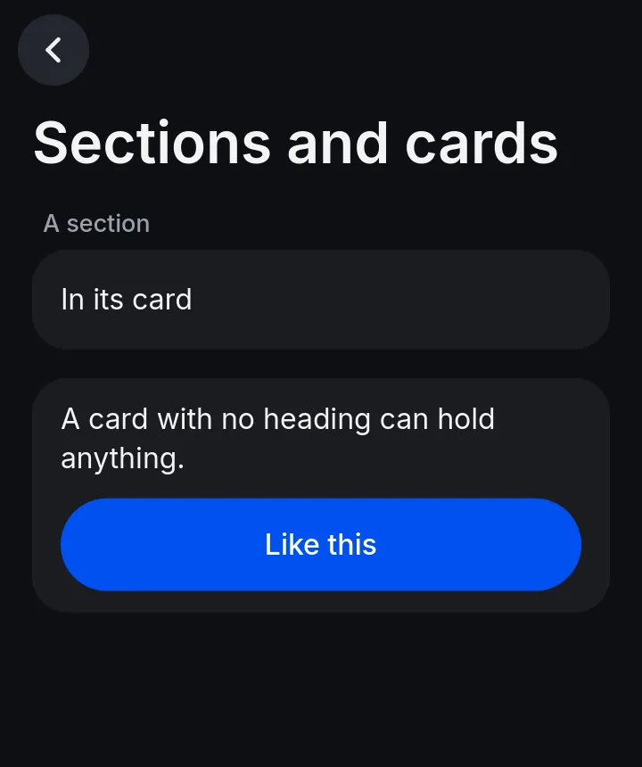
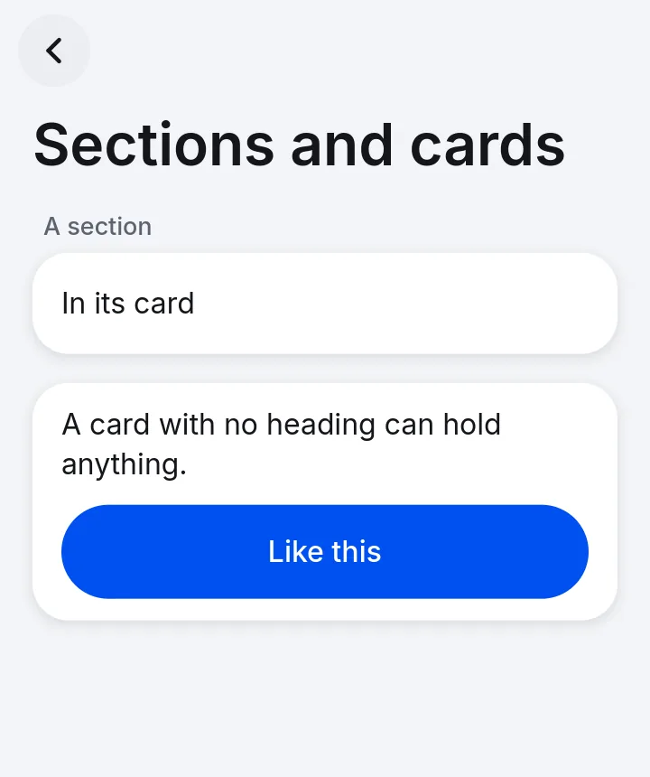
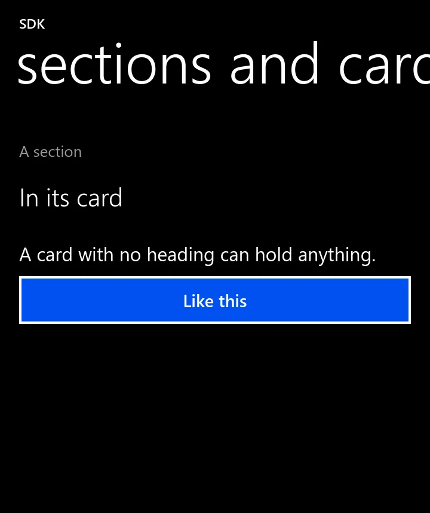

Layout, themes and styles
You say what is on a page; the style decides how it looks. Everything is in points on a 360 point wide phone, and the same code draws in either style.
How a page is laid out
- A page is a column. Things appear in the order you add them.
sectionandcardgroup things, and items in a card get dividers. Prefer these to manual spacing.rowsets things side by side.set_flexshares spare width by proportion.- Pages scroll by themselves when they outgrow the screen. A hidden node takes no room.
- Scale:
ZUI_SCALE, else the shell'sZTMETRO_SCALE(4 on the S9, so 1440x2960 pixels is 360x740 points), else the compositor's.
Who picks the style
The user wins over the app. From first choice to last (pick_style in core.c):
ZUI_STYLEin the environment.- A
ZTRF_SHELL_STYLE=dotmatrixsession falls back to Metro, since DotMatrix has not been ported to libzrnui. zrnui_style = cool|metro|followin~/.config/ztmetro/config.followgives Metro.- What the app asked for.
- zrnCoolStyle.
zui_app_set_style(app, "metro"); /* a preference: the user's choice wins */
zui_app_set_theme(app, "light"); /* zrnCoolStyle only: Metro is always dark */
zui_app_set_accent(app, 0x0050ef); /* the style rules say leave this to the system */app.set_style("metro");
app.set_theme("light");
app.set_accent(0x0050ef);app.set_style("metro");
app.set_theme("light");
app.set_accent(0x0050ef);app = zrnui.App("io.github.you.notes", "Notes", style="metro", theme="light", accent=0x0050ef)
app.set_theme("dark") # later; Python has no set_style or set_accent after creationTheme: ZUI_THEME beats the app, and zrnui_theme in the same config file sets the default. Metro is always dark. Accent: ZUI_ACCENT, else accent = in that file (a ztmetro colour name or #rrggbb), else cobalt #0050EF.
The same code in both styles



The numbers
From .m in style-cool.c and style-metro.c, in points.
| zrnCoolStyle | Metro | |
|---|---|---|
| Font | Inter | Selawik (open metric twin of Segoe UI) |
| Page margin, gap | 18, 16 | 16, 12 |
| Title | 32, scrolls with the page, 56 pt bar | 48, fixed, 108 pt header |
| Body, heading, caption | 16, 21, 13.5 | 16, 25.5, 13 |
| Row height, with subtitle | 56, 68 | 52, 66 |
| Row title, subtitle | 16, 13.5 | 21, 13 |
| Button height, radius | 52, 26 (a pill) | 40, 0 |
| Field height, radius | 52, 14 | 38, 0 |
| Card radius, inner padding | 20, 16 | 0, 0 (flat) |
| Icon tile | 32 | none: Metro draws no icons |
| Line spacing | 1.36 | 1.25 |
zrnCoolStyle colours
| Dark | Light | |
|---|---|---|
| Page | #0E0F12 | #F3F4F7 |
| Card | #1A1C21, no shadow | #FFFFFF, 10 pt soft shadow |
| Text, secondary, tertiary | #F2F3F5, #9AA1AC, #666C77 | #14161B, #5D6470, #9AA0AA |
Metro is black with white text, grey #999999 secondary text and the accent for what is on.
Style rules
- One primary button a page at most. Others tonal or plain, and danger for what destroys.
- Short noun titles. Sentence case.
- Leave the accent to the system. Tint icons sparingly.
- Check both styles before you publish:
zrn render --style metro. - Do not imitate system UI. Moderators reject it.
Other scripts
HarfBuzz shapes Sinhala, Tamil, Greek and Cyrillic, and CJK comes from fontconfig fallback. Bidirectional text is not reordered, so Arabic and Hebrew will not read correctly yet.
Checked against zrn-sdk commit 8f6fb14. Pictures are real renders of code that compiled. Source and proof.